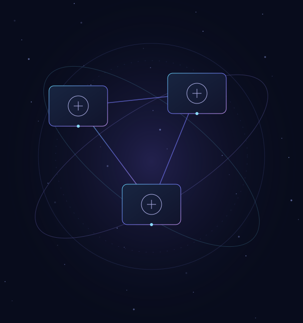

01 GitOps platform
Deployment, made explicit.
How do application and platform changes share one reviewable delivery path?
Argo CD and Kustomize definitions connect applications, networking and observability. Separate development and smoke roots make the intended environments readable in Git.
Explore gitops platformSource evidence & project scope
Desired-state definitions in an engineering lab; no running cluster is implied.
Public source snapshot: 8f4f31226fd5